In the following article, I will talk about how to contribute to the Python Barranquilla blog. To collaborate on the community blog, you need to have prior knowledge in:
- Lektor
- Git and Github
- Markdown
- virtualenvs (this is optional).
The content of this article is divided into 2 important sections:
- How to use the Lektor admin panel
- How to make a Pull Request (or PR, as it's commonly known) to the PyBAQ repository.
With this clear, let's start detailing the step-by-step of each section.
How to use the Lektor admin panel
Clone repository
Editing the Python Barranquilla website can be done in a graphical panel. To run it, you need to clone the project of our website and install it locally using:
git clone https://github.com/PyBAQ/django-quilla-web.git
Once you have cloned the repository and installed Lektor on your computer, you should run the local server using lektor server -f webpack.
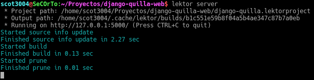
Creating an entry in Lektor
Now, go to the URL http://localhost:5000, and you will see the website in your browser.
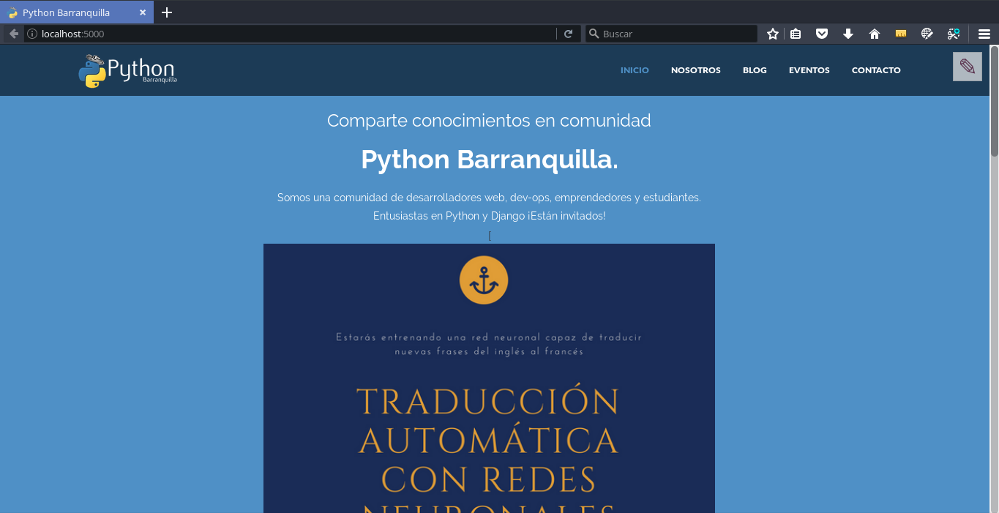
Navigate to the page you want to edit; in our case, navigate to the blog and press the edit button.
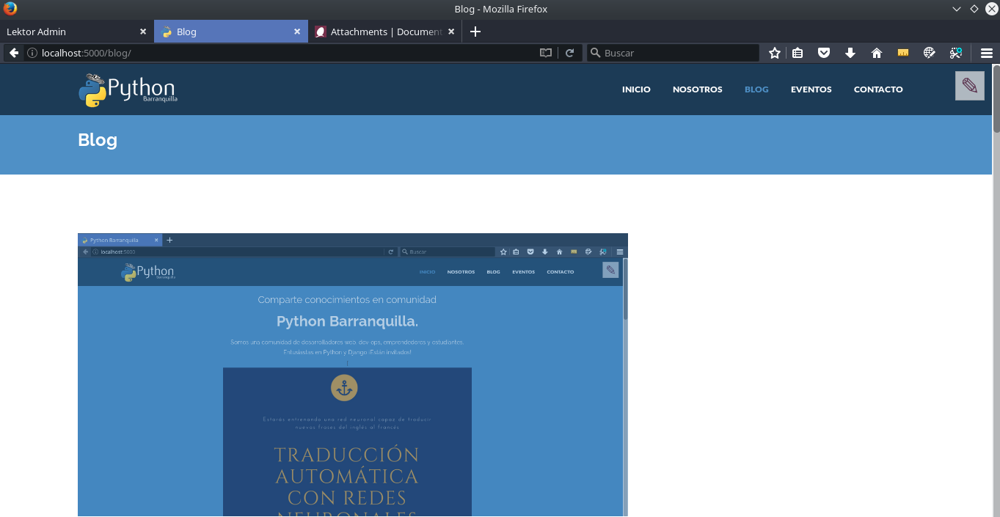
Then go to the upper right corner and press a pencil-shaped button.
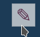
By pressing the button, the admin panel will load to edit the blog page.
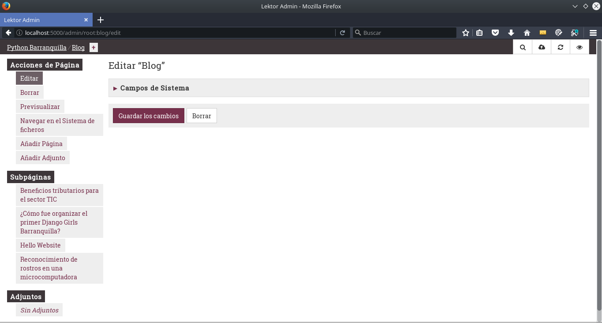
To proceed with creating the entry, enter the title and the slug
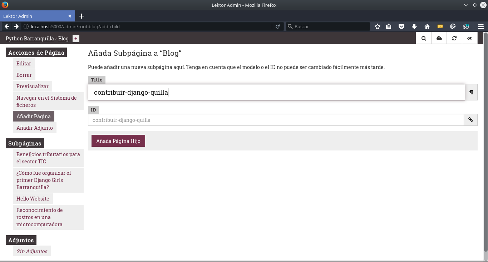
Then complete the rest of the information
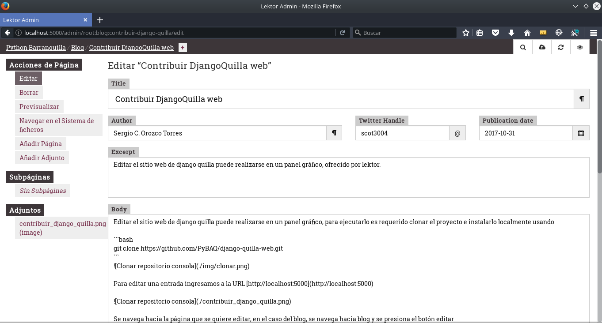
Title: Refers to the entry's title.
Author: The readable name of the person writing the article.
Twitter_Handle: Your nickname on Twitter.
Publication_date: Date in YYYY-MM-DD format with the current date.
Excerpt: Short summary displayed in the blog listing.
Body: Main content of the article.
The original article had these instructions, now (2024) it is handled differently see Images
Annexes
To upload images, press the Add Attachment button located in the sidebar.
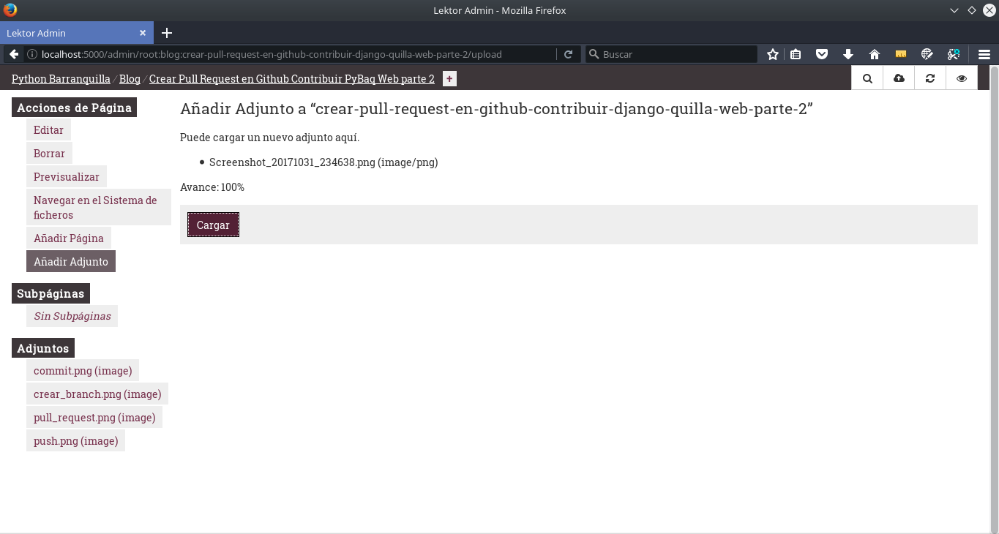
As a final step, if you upload multiple images, to only show one of the images uploaded as attachments, select the image and mark it as hidden by selecting the option Should this page be hidden? and disabling If this is enabled, the page can be detected; otherwise, the URL must be known. 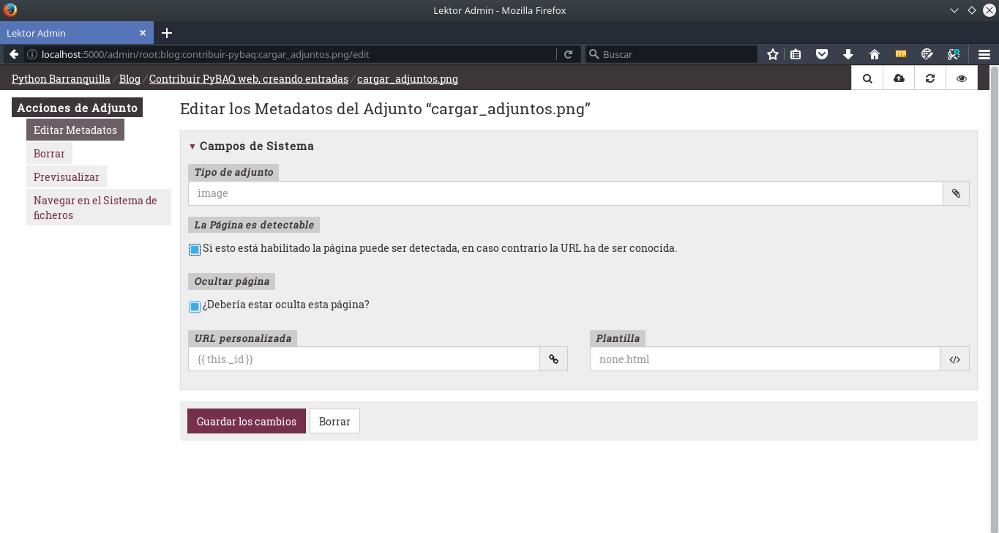
Once the writing is finished, you can preview the article in the admin panel.
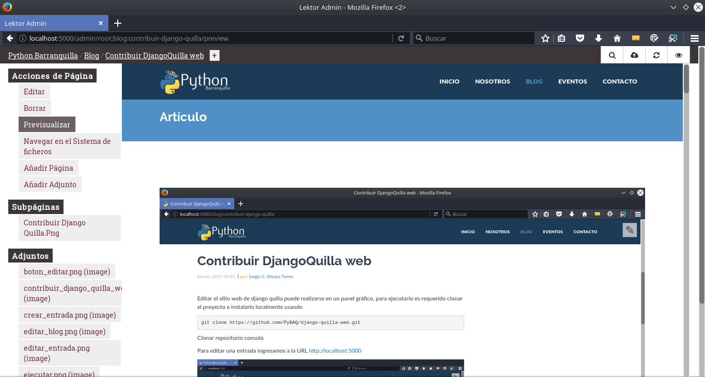
You can also see it finalized in the blog.
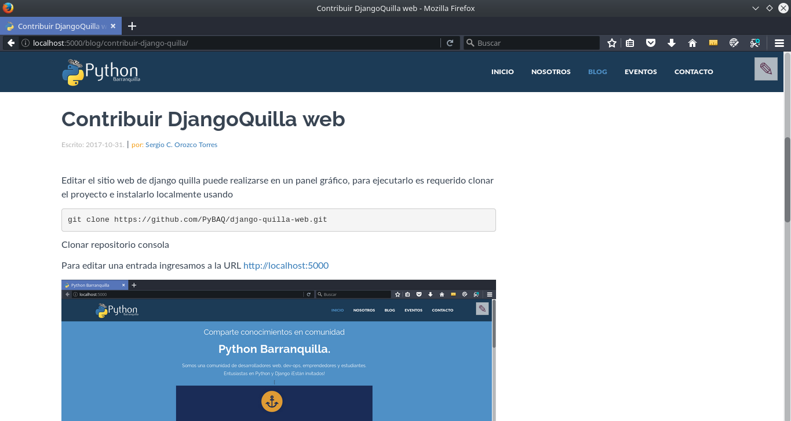
Images
To add the main image of the article, simply attach it using the Add Attachment button. The program will show the image in that directory as the main image of the article.
All other images should be included in the following folder:
/assets/img/posts/[year]/[article-slug]/
You should add them as links to the img folder directly. Below is an example from this same page:

How to make a Pull Request to the PyBAQ repository
Pull request
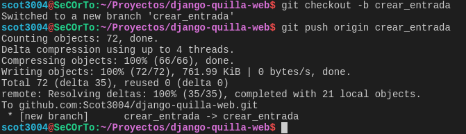
To accept changes made by community members, a control of the different commits is carried out. To be able to make a commit, the person must be familiar with various Git operations such as add and commit (see Annex 2).
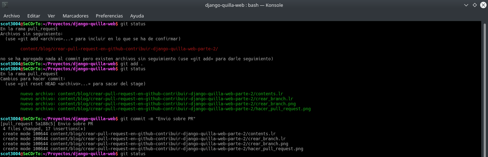
As the final step in the terminal, we push the elements to be uploaded, verifying the branch Git is currently on, as well as confirming the remote branch to which it will be uploaded.
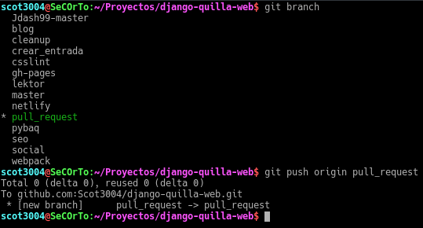
And in the Git interface, proceed to make the final Pull Request to submit the changes for approval.
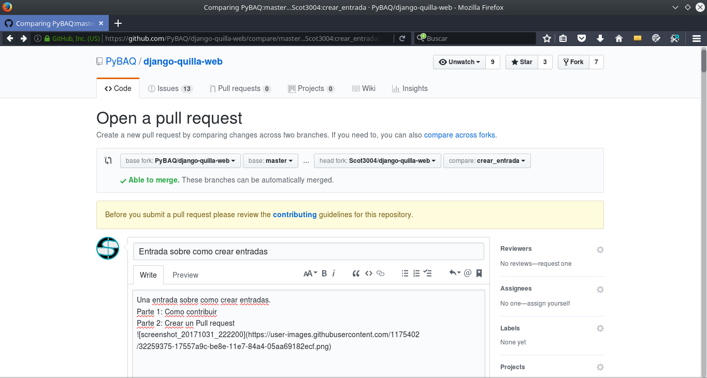
I hope my article was helpful. If you see that there are sections of this entry that can be improved, please leave me a comment or an issue on Github tagging my user @Scot3004.
Editor's Note:
For those who are just starting, we've included links to the tools you need to learn to make your contributions. Teaching and explaining to others is a great way to learn even more. Keep going!
Best regards, Javier
Annex 1: How to install Lektor
How to install it and some context.
What is Lektor?
A powerful and flexible static content management system for creating complex and attractive websites from flat files—for people who don't want to compromise between a CMS and a static page generator.
How to install it?
On the Lektor website, it explains how to install it. If you have any issues, access the community discord and ask for help.
How to use it?
To understand a bit about how to use Lektor, we recommend creating your own project following the Lektor quickstart guide. We would like to provide more help, but in this case, the documentation is already written. If English is not your thing, you can translate the page with Google.
Annex 2: Contribution Workflow on Github
To contribute to code projects (open or closed), we must understand the basics of Git, Github, and the importance of version control in code projects. Contributing to our blog is a way to gain that experience.
Understanding the workflow
The workflow to contribute to PyBAQ is the same as almost all software projects: pull request. In the list below, you'll see illustrations on how to work with Github (the web platform). This interaction is usually done with Git (the tool that handles version control). Freecodecamp has a good beginner's guide.
- Pull/Fork: Create a copy of the repository in your GitHub account.
- Branch: Create a branch with a name related to the contribution you will make. 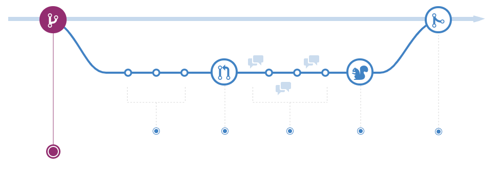
- Commit: Make changes to the code. For example: write a new article. Save the changes in that branch (branch) and commit them.
- Push: Send the changes you have linked to the branch to your repository. 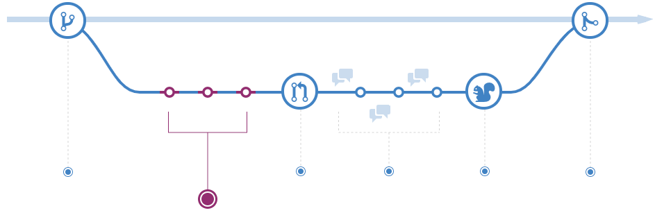
- Pull Request: Submit a request to include your code on the page. 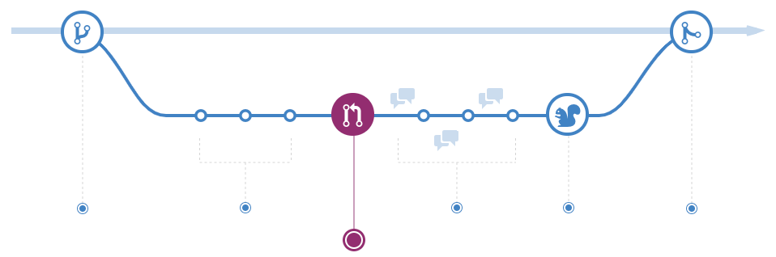
- Discuss: Discuss the changes you have introduced with the owners of the original repository. If there are changes, just repeat steps 3 and 4; the pull request will cover the commits you make to that branch until it is accepted. 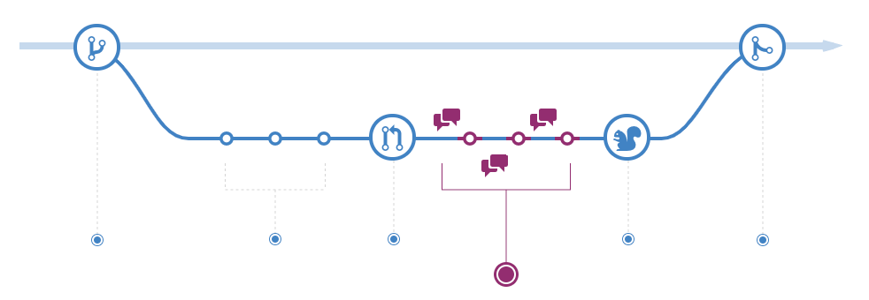
- Rebase + Merge: See in [original article](https://docs.github.com/en/get-started/quick
start/github-flow). 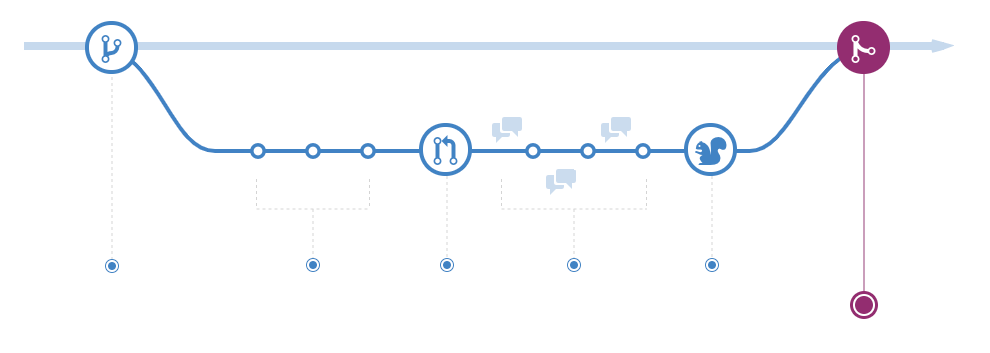
If you have a basic understanding of Git but don't like the command line or don't feel comfortable with it yet, there is also Github Desktop.